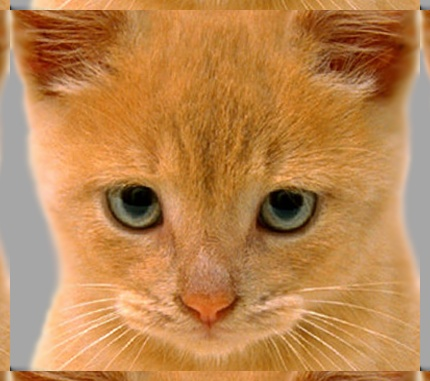

Project 1: Image Filtering and Hybrid Images
Image filtering is a process on images which alters the values in each pixel based on a calculation performed using values in neighboring pixels. Filtering can be used to blur an image, sharpen details, denoise an image, detect edges, increase contrast, detect patterns, and much more. Hybrid images are static images with two interpretations, that change as a function of viewing distance.
A hybrid image is a blend of two images, one of which is low-pass filtered and the other high-pass filtered. The human eye can see the high frequency components in a image when up cose, and tend to see only the low frequencies at a distance. This phenomenon gives rise to the two interpretations of the hybrid image. This can also be noted when the image is downsampled or zoomed-out and by squinting your eyes.
Image Filtering
The filtering operation we are doing in this assignment is a linear filter. There are many linear filters, like identity filter, box filter, gaussian filter sobel filter, etc. Matlab has an inbuilt function to generate all these filters. In this project we implement our own filtering function in the my_imfilter function. The filter we use in this is a Gaussian Filter. The filtering is done by convolving the filter with the image. This is basically sliding the filter across the image, multiplying the image and the filter element-wise, adding them and storing it in the center pixel. This is done for the whole image.
The filtering formula is:
%% Assigning Parameters
[frow,fcol] = size(filter); %filter size
rowshift = floor(frow/2); %param for padding rows
colshift = floor(fcol/2); %param for padding cols
image = padarray(image,[rowshift, colshift], 'symmetric'); %pad image (0s/circ/repl/symm)
[nrows, ncols, nchannels] = size(image); %image size
output = zeros(nrows,ncols,nchannels); %intermediate output image size
%imwrite(image, 'Padded.jpg', 'quality', 95); %Saving intermediate image
%% Filtering
for i=1:nchannels %For each channel
for j=1+rowshift:nrows-rowshift %For each Row
for k=1+colshift:ncols-colshift %For each Column
temp = image(j-rowshift:j+rowshift, ... %Multiplying the filter and
k-colshift:k+colshift,i).*filter; %the image element-wise
output(j,k,i) = sum(temp(:)); %Add and store in center pixel
end
end
end
Before the filtering process, the input image is padded on all sides so that the corner and edge pixels in the image has enough neighboring pixels for the filtering to take place. The image can be padded in 4 ways:
- Zero Padding
- Circular Padding
- Symmetric Padding
- Replicative Padding
|  | |||
These images after being filtered by a Gaussian Filter look like this:
The edges of the Zero-Padded image has some grey edges because of the black border. The Circular-Padded image satcks the same image one on top of the other, and also side by side. This doesn't give a better edge. The Repetitive and Symmetric Padding performs equally good. I may have to give Repetitive the edge because it pads only with the last pixel in the image, and so the edge will have dominating characteristics from the edge pixeels, which is a desired behavior. Even then, I went with Symmetric Padding, becaue that looks cool.
The algorithm I have coded up is really simple. There are three for loops, one each for the rows, columns, and the channels. The code loops through each and every pixel in the image, except for the padded part, slides the filter along with it, and multiplies the filter element-wise with the image window. Then, it adds the values and stores it in the center pixel.
The filtering operation could have been done in various ways. But, I found this to be the easiest and cleanest. One interesting thing that I want to mention is the sum(temp(:)) operation. Because, I think this is much cleaner than what I would have used (sum(sum(temp))) if I had not seen the Matlab Tutorials on the Webpage. This vectorization operation really comes handy.
Hybrid Image Formation
Hybrid images are formed by combining two images, one of which is low-pass filtered, and the other high-pass filtered. The low-pass filtered image is obtained by passing the first image and the filter for it into the my_imfilter function. The high-pass filtered image is obtained a little differently. We subtract the low-pass filtered image of the second image from the original second image. This removes the low frequency components in the image, and retains only the high frequency components.
%% Setup
% read images and convert to floating point format
image1 = im2single(imread('../data/dog.bmp')); %Low-frequency image
image2 = im2single(imread('../data/cat.bmp')); %High-frequency image
%% Filtering and Hybrid Image construction
cutoff_frequency1 = 5; %Low-pass cut-off
%(dog=5;cat=6;bird=4;plane=5;bicycle=5;motorcycle=4;marilyn=3;einstein=2;fish=6;submarine=2;
cutoff_frequency2 = 10; %High-pass cut-off
%(cat=10;dog=11;plane=5;bird=5;motorcycle=11;bicycle=5;einstein=5;marilyn=5;submarine=12;fish=5;
filter1 = fspecial('Gaussian', cutoff_frequency1*4+1, cutoff_frequency1); %Filter for Low-frequency image
filter2 = fspecial('Gaussian', cutoff_frequency2*4+1, cutoff_frequency2); %Filter for HighFrequency image
low_frequencies = my_imfilter(image1,filter1); %Lowpass Filtering image1
high_frequencies = image2 - my_imfilter(image2,filter2); %Highpass Filtering image2
hybrid_image = low_frequencies/2 + (high_frequencies+0.5)/2; %I have divided the indivdual
%images by 2 because when we
%add the two images we will go
%over 1.0. I've added 0.5 to
%the high frequency image
%because it is centered at 0
The cut-off frequency is what determines how much low frequency should the image retain. Frequency components above this are discarded in a way decided by the filter we use. In this project, I have used a Gaussian filter which has a smooth curve around the cut-off frequency. The Box filter abruptly cuts the high frequency components, and so on. In the Gaussian filter, the cut-off frequency corresponds to the Standard Deviation of the filter.
The two filtered images are combined to give the hybrid image. It is not a simple addition of the low_frequencies and high_frequencies images that forms the hybrid image. We have to remember the fact that, the way in which we created the high frequency image leaves it centered at 0, ranging from -0.5 to 0.5. So, we have to account for that offset. This is done by adding 0.5 to all the elements in the high frequency image. Further, adding the two images now will put the range of the resulting image at 0 to 2. To limit it to 1, I have divided the individual images by 2 and then added them to form the hybrid image.
We were given 5 pairs of images to work with in this project. I have made 10 hybrid images from all the pairs, with each image being the low frequency part in one and the high frequency in the other. One interesting thing to note is that, the skeleton code came with just one filter, corresponding to one cut-off frequency. After a lot of experientation and tweaking, I came to a conclusion that having different cut-off frequencies for the low frequency and the high frequency images made the hybrid images look better. Also, most hybrid images looked better for one image being the low frequency component rather than the high frequency. I think this is because each image has a different composition of frequencies in its image. Further, the cut-off frequency for the best result for a certain image also varied when the image was used as the other frequency component in the hybrid image. I have commented the different cut-off frequencies in the code itself.
Hybrid Image Results
 |
|||
 |
|||
 |
|||
 |
|||
 |
 |
||
 |
 |
||
 |
|||
 |
 |
||
 |
 |
 |
The hybrid images above don't look that good because, the image is downsampled to fit into the table. To view the hybrid image phenomenon we were provided with a function which downsamples the image and shows 5 different scale of the same image.